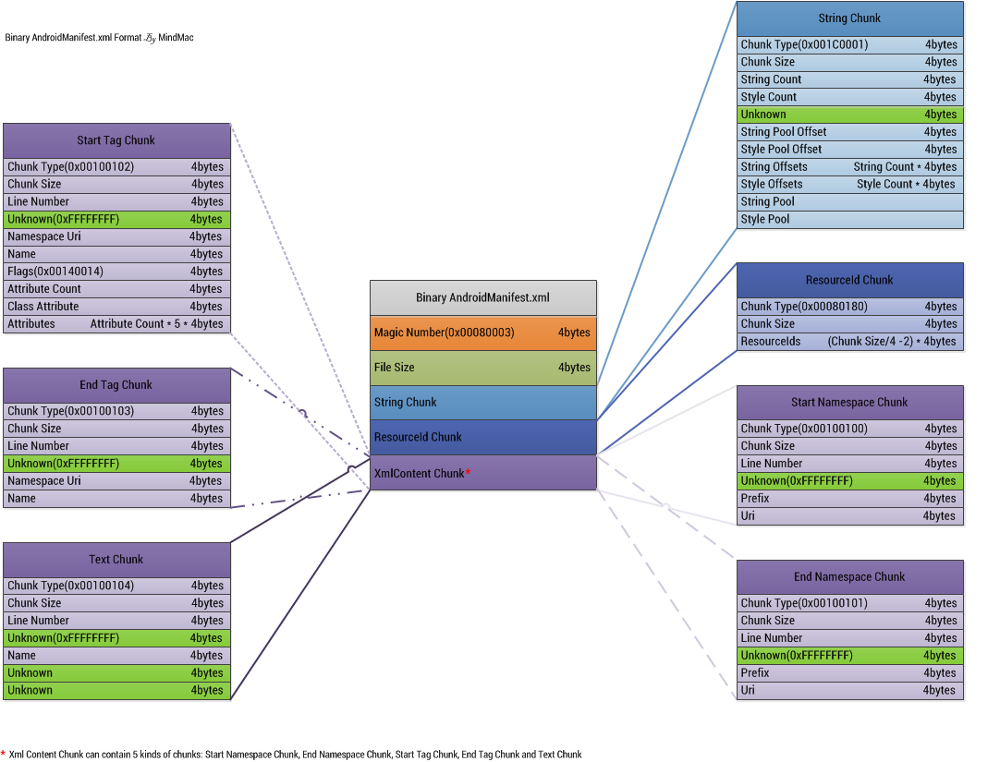
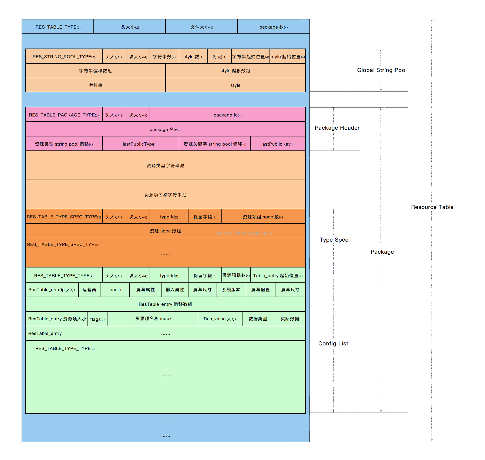
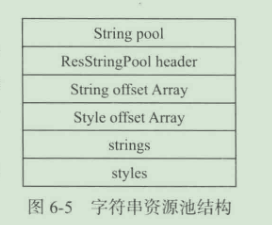
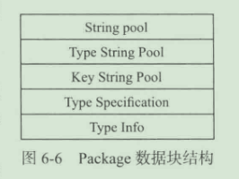
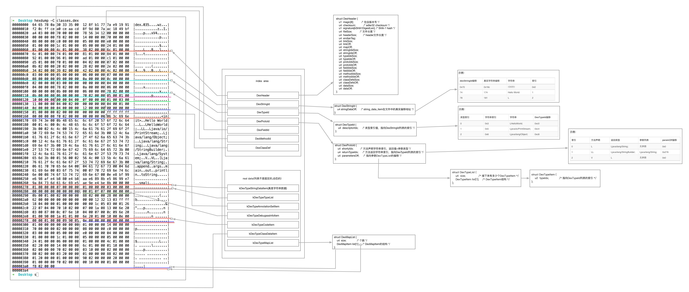
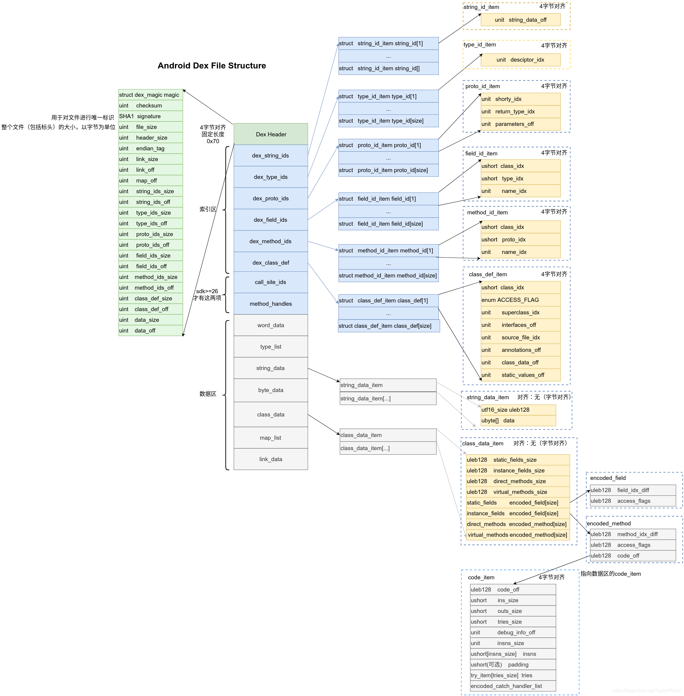

AndroidManifest.xml文件格式解析
格式分析

格式分析
头部信息
每个头部固定有以下字段：
- 文件魔数：4字节
- 文件大小：4字节
解析String Chunk
ChunkType：StringChunk的类型，固定四个字节：0x001c0001。
ChunkSize：StringChunk的大小，四个字节。
StringCount：StringChunk中字符串的个数，四个字节。
StyleCount：StringChunk中样式的个数，四个字节。但实际解析过程中，这个值一直是0x00000000。
Unknown：位置区域，四个字节，在解析过程中需要略过这四个字节。
StringPoolOffset：字符串池的偏移值，四个字节，这个偏移值是相对于StringChunk的头部位置。
StylePoolPffset：样式池的偏移值，四个字节。因为这里没有Style，所以这个字段可忽略。
StringOffsets：每个字符串的偏移值，它的大小应该是StringCount*4字节。
StyleOffsets：每个样式的偏移值，它的大小应该是SytleCount*4字节。
解析Resourceld Chunk
Resourceld Chunk主要用于存放AndroidManifest中用到的系统属性值对应的资源ID。
ChunkType：Resourceld Chunk的类型，固定四个字节：0x00080108。
ChunkSize：Resourceld Chunk的大小，四个字节。
Resourcelds：Resourceld的内容，这里大小是Resourceld Chunk大小除以4，减去头部的大小8个字节（ChunkType和ChunkSize）。
解析Start Namespace Chunk
这个Chunk主要包含一个AndroidManifest文件中的命名空间的内容。
- ChunkType：Chunk的类型，固定四个字节：0x00100100。
- ChunkSize：Chunk的大小，四个字节。
- Line Number：在AndroidManifest文件中的行号，四个字节。
- Unknown：未知区域，四个字节。
- Prefix：命名空间的前缀（在字符串中的索引值），比如android。
- Uri：命名空间的URI（在字符串中的索引值），比如http://schemas.android.com/apk/res/android。
解析Start Tag Chunk
这个Chunk主要存放AndroidManifest.xml中的标签信息。
- ChunkType：Chunk的类型，固定四个字节：0x00100102。
- ChunkSize：Chunk的大小，四个字节。
- Line Number：在AndroidManifest文件中的行号，四个字节。
- Unknown：未知区域，四个字节。
- Namespace URI：这个标签用到的命名空间的URI，比如用到了android这个前缀，那么就需要用http://schemas.android.com/apk/res/android这个URI区获取，四个字节。
- Name：标签的名称（在字符串中的索引值），四个字节。
- Flags：标签的类型，四个字节，比如是开始标签还是结束标签等。
- Attribute Count：标签包含的属性个数，四个字节。
- Class Atrribute：标签包含的类属性，四个字节。
- Atrributes：属性内容，每个属性算是一个Entry，Entry是大小为5的字节数组[Namespace, URI, Name, ValueString, Data]，在解析的时候需要注意第四个值，要做一次处理：右移24位。所以这个字段的大小是
属性个数*4*5个字节。
项目下载地址
https://github.com/fourbrother/parse_androidxml
resource.arsc文件格式解析
Android中资源文件的id格式
用apktool工具反编译时，在res/values目录下有个public.xml文件，这个文件保存了apk中所有id类型和对应的id值。包括了如下内容：
- type：类型名
- name：资源名
- id：资源的id
资源包括如下几种：drawable、menu、layout、string、attr、color、style等。
接下来介绍如何解析resource.arsc文件：
解压一个apk得到对应的resource.arsc文件。
Android源码中的frameworks/base/include/androidfw/ResourceTypes.h即是resource中定义的所有数据结构。

数据结构的定义
头部信息（ResChunkHeader）
resource.arsc文件格式是由一系列chunk构成的，每一个chunk都包含一个结构ResChunk_header，用来描述这个Chunk的基本信息。
参数：
- type：当前chunk的类型。
- headerSize：当前chunk的头部大小。
- size：当前chunk的大小。
资源索引表的头部信息（ResTableHeader）
resource.arsc文件的第一个结构就是资源索引表头部，其结构描述了resource.arsc文件的大小和资源包数量。
参数：
- header：标准的chunk头部信息格式。
- packageCount：被编译的资源包的个数。
资源项的值字符串资源池（ResStringPoolHeader）
接下来紧跟着的是资源项的值字符串资源池，这个字符串资源池包含了所有在资源包里面定义的资源项的值字符串。
参数：
- header：标准的chunk头部信息结构。
- stringCount：字符串的个数。
- styleCount：字符串样式的个数。
- flags：字符串的属性，可取值包括0x000（UTF-16）、0x001（字符串经过排序）、0x100（UTF-8）和他们的组合值。
- StringStart：字符串内容块相对于其他头部的距离。
- styleStart：字符串样式块相对于其他头部的距离。
紧跟着头部的是两个偏移数组，分别是字符串偏移数组和字符串样式偏移数组。这两个偏移数组的大小分别等于stringCount和styleCount的值。而每一个元素的类型都是无符号整型。整个字符中资源池结构如图所示：

字符串资源池中的前两个字节为字符串长度，如果字符串为UTF-8则以0x00为结束符，UTF-16则以0x0000位结束符。
字符串和字符串样式位置一一对应。
字符串样式的结构包含如下两个结构ResStringPool_ref和ResStringPool_span。一个字符串可以对应多个ResStringPool_span和一个ResStringPool_ref。ResStringPool_span在前描述字符串的样式，ResStringPool_ref在后固定值为0xffffffff作为占位符。样式块会以两个值为0xffffffff的ResStringPool_ref作为结束。
Package数据块（ResTablePackage）
接着资源项的值字符串资源池后面的部分就是Package数据库，这个数据库记录编译包的元数据。
参数：
- header：chunk的头部信息数据结构。
- id：包的id，等于Package Id，一般用户包的值Package Id为0x7f，系统资源包的Package Id为0x01。
- name：包名。
- typeString：类型字符串资源池相对头部的偏移。
- lastPublicType：最后一个导出的Public类型字符串在类型字符串资源池中的索引，目前这个值设置为类型字符串资源池的元素个数。
- keyStrings：资源项名称字符串相对头部的偏移。
- lastPublicKey：最后一个导出Public资源项目名称字符串在资源项目名称字符串资源池中的所有，目前这个值设置为资源项名称字符串资源池的元素个数。
Package数据库的整体结构：

类型规范数据块（ResTableTypeSpec）
类型规范数据库用来描述资源项中的配置差异性。通过这个差异性描述，可知道每个资源项的配置状况，进而知道在Android资源管理框架在检测到设备配置信息发生变化之后，是否需要重新加载该资源项。
类型规范数据块是按照类型来组织的，即每一种类型都对应一个类型规范数据块。
参数：
- header：chunk的头部信息结构。
- id：标识资源的Type ID。Type ID是指资源的类型ID，有animator、anim、color、drawable、layout、menu、raw、string和xml等，每一种都会被赋予一个ID。
- res0：保留，始终为0。
- res1：保留，始终为0。
- entryCount：等于本类型的资源项个数，指名称相同的资源项的个数。
在这之后紧跟着的是一个大小为entryCount的uint32_t数组，每一个数组元素都用于描述一个资源项的配置差异性。
资源类型项数据块（ResTableType）
资源类型数据块用来描述资源项的具体信息，可以用来得知每一个资源项的名称、值、配置等信息。资源类型项数据统一是按照类型和配置来组织的。
参数：
- header：chunk的头部信息结构。
- id：标识资源的Type ID。
- res0：保留，始终为0。
- res1：保留，始终为0。
- entryCount：等于本类型的资源项个数，指名称相同的资源项的个数。
- entriesStart：等于资源项数据块相对头部的偏移值。
- resConfig：指向一个ResTable_config，用来描述配置信息、地区、语言、分辨率等。
ResTableType后接着是一个大小为entryCount的uint32_t数组，每一个数组元素都用于描述一个资源类型项数据块的偏移位置。紧跟着的是一个大小为entryCount的ResTable_entry数组，每一个数组元素都用来描述一个资源项的具体信息。
ResTable_entry根据flags的不同，其后跟随的数据也不同，如果为1，则ResTable_entry是ResTable_map_entry（继承自ResTable_entry，其后跟随count个ResTable_map类型组）；如果为0，则ResTable_entry其后跟随一个Res_value（描述一个普通资源的值）。
项目下载地址
https://github.com/fourbrother/parse_androidarsc
dex文件格式解析
dex文件格式


构造dex文件
首先创建一个java文件：
1 | public class hello{ |
然后运行命令：
1 | javac hello.java |
其中dx工具在Android SDK路径下：\build-tools\29.0.3\dx.bat
PS：这里需要用低版本的java环境，因为新版本的class文件dx工具还无法支持。
接着运行命令：
1 | adb root |
-cp是classpath的缩写，hello是要运行的class名称。
因为命令执行时，dalvikvm会在/data/dalvik-cache/目录下创建.dex文件，因此要求adb的执行shell对目录/data/dalvik-cache/有读写执行的权限。
解析数据结构
头部信息Header结构
header处理描述.dex文件的文件信息外，还有文件里其他各个区域的索引。
| 字段名称 | 偏移值 | 长度 | 描述 |
|---|---|---|---|
| magic | 0x0 | 8 | ‘Magic’值，即魔数字段，格式如”dex\n035\0”，其中的035表示结构的版本。 |
| checksum | 0x8 | 4 | 校验码。 |
| signature | 0xC | 20 | SHA-1签名。 |
| file_size | 0x20 | 4 | Dex文件的总长度。 |
| header_size | 0x24 | 4 | 文件头长度，009版本=0x5C,035版本=0x70。 |
| endian_tag | 0x28 | 4 | 大小端标签，标志dex文件格式为小端，此项一般固定为0x12345678。 |
| link_size | 0x2C | 4 | 连接段的大小，如果为0就表示是静态连接。 |
| link_off | 0x30 | 4 | 连接段的开始位置，从本文件头开始算起。如果连接段的大小为0，这里也是0。 |
| map_off | 0x34 | 4 | map item的偏移地址，该item属于data区里的内值要大于等于data_off的大小 |
| string_ids_size | 0x38 | 4 | 字符串列表的字符串个数。 |
| string_ids_off | 0x3C | 4 | 字符串列表表偏移值。 |
| type_ids_size | 0x40 | 4 | 类型列表里类型个数。 |
| type_ids_off | 0x44 | 4 | 类型列表偏移值。 |
| proto_ids_size | 0x48 | 4 | 原型列表里原型个数。 |
| proto_ids_off | 0x4C | 4 | 原型列表偏移值。 |
| field_ids_size | 0x50 | 4 | 字段列表里字段个数。 |
| field_ids_off | 0x54 | 4 | 字段列表偏移值。 |
| method_ids_size | 0x58 | 4 | 方法列表里方法个数。 |
| method_ids_off | 0x5C | 4 | 方法列表偏移值。 |
| class_defs_size | 0x60 | 4 | 类定义类表中类的个数。 |
| class_defs_off | 0x64 | 4 | 类定义列表偏移值。 |
| data_size | 0x68 | 4 | 数据段的大小，必须以4字节对齐。 |
| data_off | 0x6C | 4 | 数据段偏移值 |
剩余部分数据结构
略，具体参考上面的图片以及安卓源码中的/dalvik/libdex/DexFile.h文件。